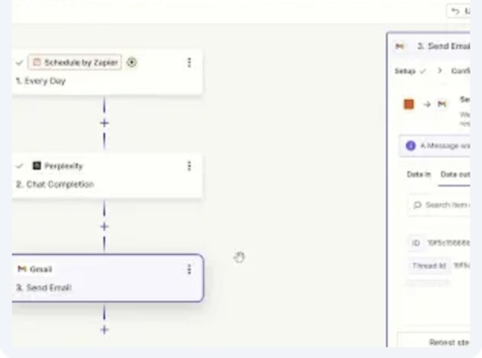
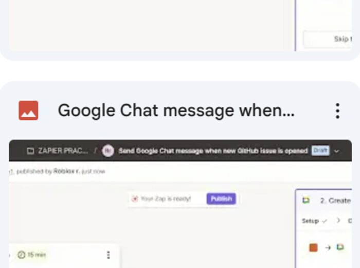
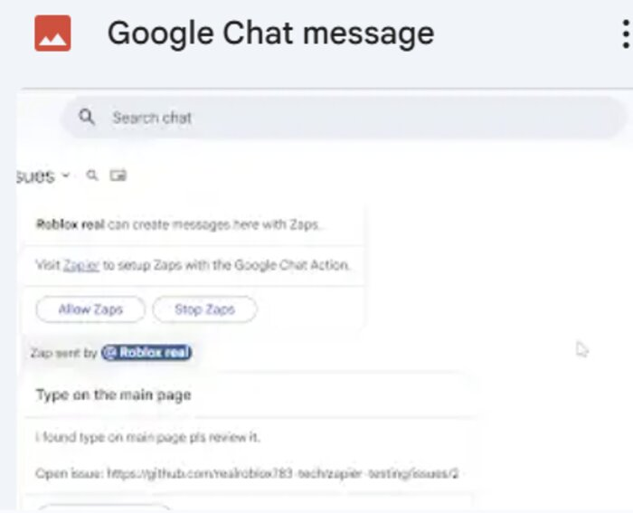
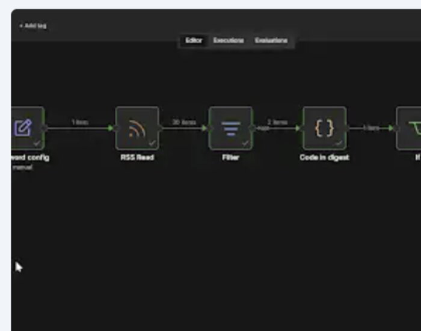
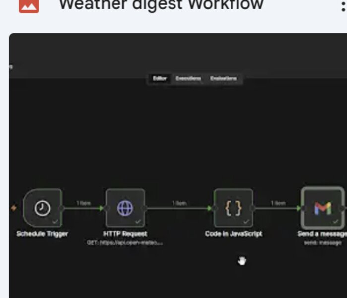
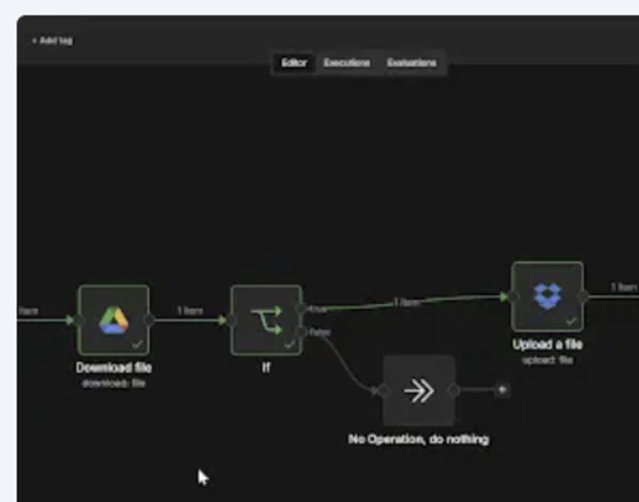
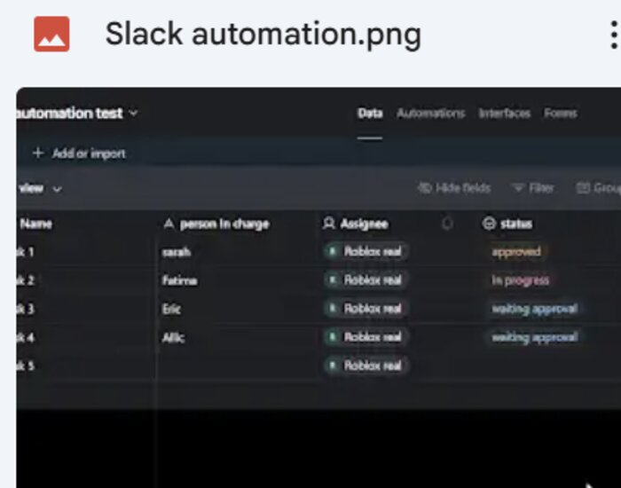

CS Student · Karachi, Pakistan
CS Student | Learning JS & Web Development | Exploring AI Automation
Building real projects instead of just following tutorials — and documenting every step of the process.
01 — About
I'm a third-year Computer Science student at the University of Karachi. Right now I'm deep in JavaScript and web development fundamentals — building things from scratch, breaking them, and figuring out why.
Beyond code, I build AI automation workflows with n8n, Zapier, and Make — scheduled digests, cross-app notifications, and file syncs that run without me touching them. I'm also learning UI/UX design in Figma because I believe developers who understand design build better products.
My approach is simple: learn by building real projects, document the process, share what I learn, and stay active in the developer community. I'd rather have three rough projects I actually made than thirty certificates from tutorials I passively watched.
Active participant at Google Developer Group events. Attended a rapid-prototyping session on building MVPs with Gemini — learning to ship fast and iterate.
Volunteered at "HR 4.0: Nurturing Talent with Technology," gaining firsthand experience in how tech intersects with professional development.
02 — Skills
Languages
Tools
Automation
Design
03 — Projects
01
A Java application that implements pathfinding algorithms (Dijkstra's, A*) to find the fastest route through simulated city traffic. Inspired by how real GPS navigation actually works under the hood.
02
This site — built from scratch with plain HTML, CSS, and JavaScript. No frameworks, no templates. Designed to be readable, editable, and a living showcase of what I'm learning.
03
Seven working automations across Zapier, n8n, and Make — scheduled digests, notification pipelines, and cross-app file syncs, each documented with a screenshot of the live workflow.
04 — Automation
Screenshots straight from my Zapier, n8n, and Make dashboards — proof these actually run, not just diagrams. Each one automates a real trigger-to-outcome chain: an event happens somewhere, and the workflow handles the rest without me touching it.

🔍 View screenshotRuns on a daily schedule, queries Perplexity for a chat completion, and emails the summary via Gmail — a hands-off daily digest.
Schedule → Perplexity → Gmail

🔍 View screenshotWatches a GitHub repo for new issues and instantly posts a Google Chat message to the team channel — so nothing gets missed between tools.
New GitHub Issue → Google Chat

🔍 View screenshotPosts a recurring "what are you working on this week" message to Google Chat, replacing a manual weekly reminder.
Schedule → Google Chat

🔍 View screenshotReads an RSS feed, filters and reformats new items with a Code node, then posts a digest to a Discord channel on a schedule.
RSS Read → Filter → Code → Discord

🔍 View screenshotPulls current weather from a public API on a schedule, formats it with a Code node, and sends the digest by email.
Schedule → HTTP Request → Code → Send

🔍 View screenshotDownloads a file from Google Drive, runs a conditional check, and uploads it to Dropbox — a small but reliable cross-cloud handoff.
Drive → If → Dropbox

🔍 View screenshotWatches an Airtable base for records that match a status condition and sends an actionable Slack message — keeping a team tracker current without manual pings.
Airtable condition → Slack message
05 — Learning Journey
Exploring n8n and Zapier to build automated workflows — connecting APIs, scheduling tasks, and reducing manual work.
ExploringTo-do app, weather app, form validator — small projects to solidify fundamentals.
BuildingWhether it's a project idea, a freelance opportunity, or just a question — I'd love to hear from you.
Open to freelance projects in web development and automation